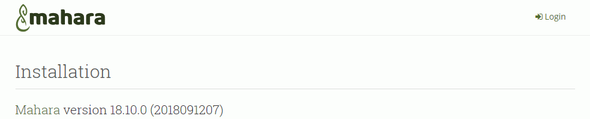
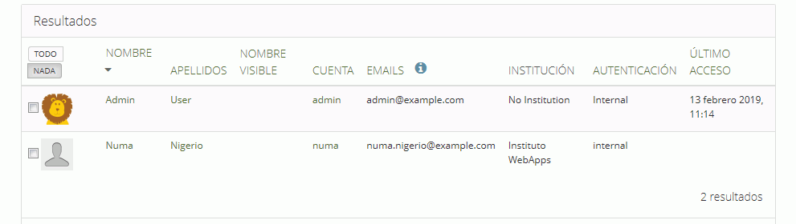
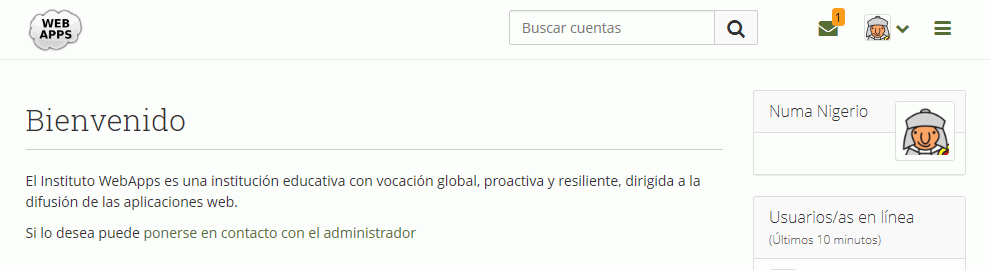

En este ejercicio hay que acabar entregando una carpeta con el nombre del alumno y que contenga:
 En los enunciados de los ejercicios se muestran capturas parciales como ayuda, pero las capturas que se entreguen en el examen deben ser capturas de toda la pantalla.
En los enunciados de los ejercicios se muestran capturas parciales como ayuda, pero las capturas que se entreguen en el examen deben ser capturas de toda la pantalla.
Aplicación: Mahara 18.10 (25/10/18). Página web: Mahara
ALTER DATABASE iaw_mahara_1 CHARACTER SET utf8 COLLATE utf8_unicode_ci;
$cfg->dbtype = 'XXXX';
$cfg->dbhost = 'localhost';
$cfg->dbport = null;
$cfg->dbname = 'XXXX';
$cfg->dbuser = 'XXXX';
$cfg->dbpass = 'XXXX';
$cfg->wwwroot = 'http://localhost/mahara/';
$cfg->dataroot = '/tmp/mahara-dataroot';

 (haga una captura):
(haga una captura):

Bienvenido
El Instituto WebApps es una institución educativa con vocación global, proactiva y resiliente, dirigida a la difusión de las aplicaciones web.
Si lo desea puede ponerse en contacto con el administrador


Nota: las nuevas reglas pueden simplemente añadirse al final de la hoja de estilo.